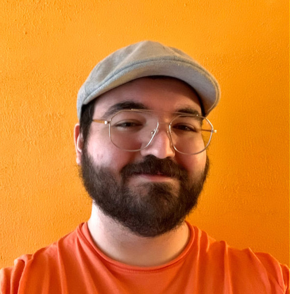

Welkom op Kaasiand.cool!
Dit is mijn website en het thuis van mijn digitale creaties! Je kunt alles bereiken via de navigatiebalk hier linksbovenin. De rest van de site is in het Engels.
Over mij
Hallo! Ik ben Daniël. Ik maak coole dingen en hoop dat jij ze ook cool vindt. Ik hou van talen, typografie, videogames, frontenddevelopment, kunstzinnig gepriegel in 2D en 3D, en alles wat een beetje tussen deze vijf–zes dingen in zit. Backenddevelopment mag de absolute tering krijgen.